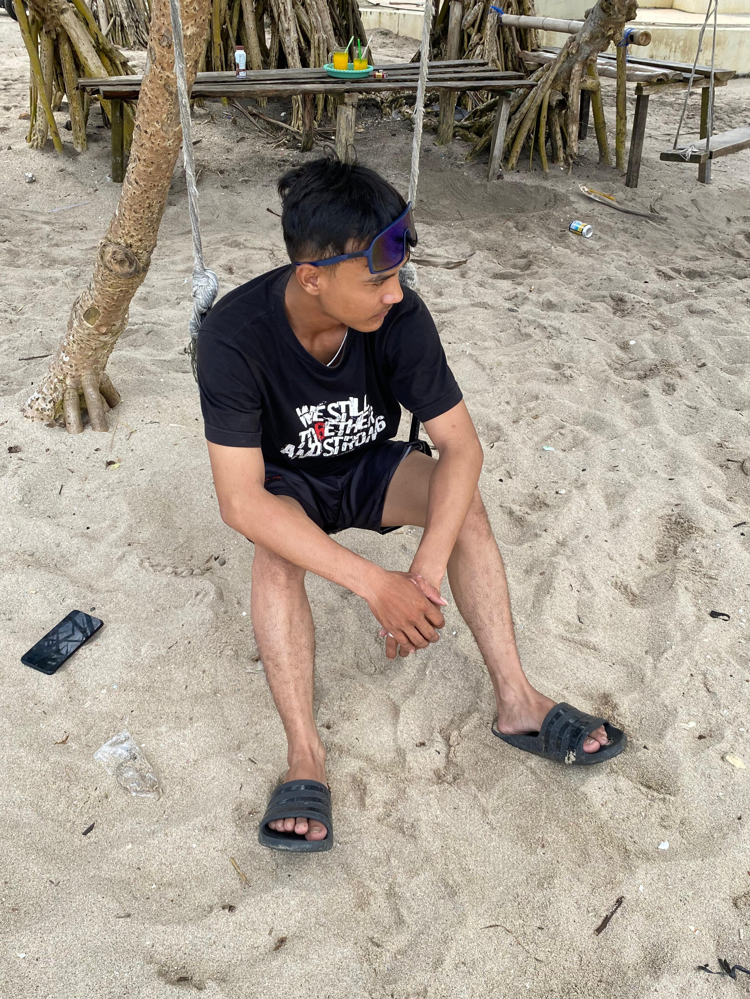

Saya adalah seorang karyawan swasta, sedang belajar Web Development untuk berkarir di bidang IT.
📧 Email: adi.setiyawan.dev@gmail.com
📍 Lokasi: sragen, jawa tengah
PTsama sama untung | 2025 - Sekarang
SMKN9 SURAKARTA | 2022
Jurusan: Animasi
Website CV Online | 2026
Membuat website CV pribadi menggunakan HTML dan di-hosting di GitHub Pages. Lihat Website
Website ini dibuat saat belajar Day 2 - Web Developer dari Nol